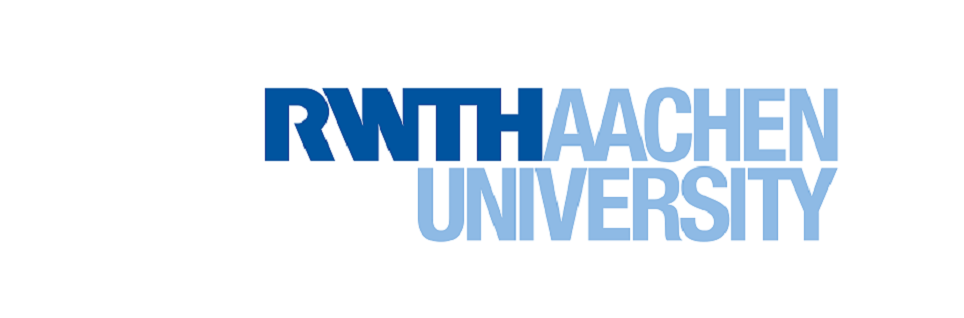
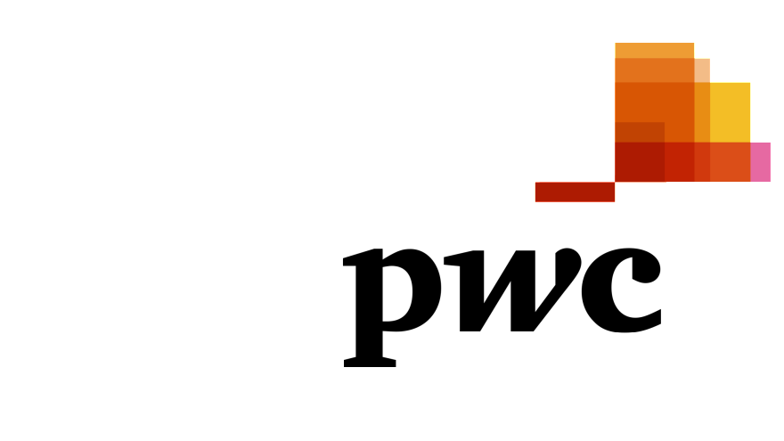

| Teaching Assistant | Forensic Analyst Intern | Data Science Intern | Master Thesis Student | |
|---|---|---|---|---|
| Company/Institute |  |  | ||
| Duration | November 2016-February 2017 | April 2017-July 2017 | October 2017-March 2018 | April 2018-ongoing |
| Description | • Assisting professor in the “Big Data in Medical Informatics” Lecture. • Preparing learning materials about topics related to biomedical ontologies and RDF data models. |
• The internship covered the field of Forensic Technology Solutions & Data Mining. • Working with ERP system (i.e. SAP) and in the following topics: predictive Data Analysis, Computer forensics and e-Discovery. |
• Dealing with big data analytics and machine learning projects on predictive modelling, supervised/unsupervised learning, validation. • Working with Spark as an open source engine for big data processing. |
Topic: Conceptualization and Development of a Predictive Big Data Streaming Application in the Context of Automotive Manufacturing. |
| Technologies | RDF, SPARQL query language, BIO2RDF. | Microsoft SQL, QlikView, Java, SAP/ERP. | Spark SQL, Spark MlLib, Spark Streaming, Tableau, R, Python (pandas, numpy, scipy, scikit-learn, seaborn). | Spark (SQL, ML, Streaming), RabbitMQ, python libraries such as pika, scikit-learn, scipy, pandas, numpy, keras, matplotlib. |